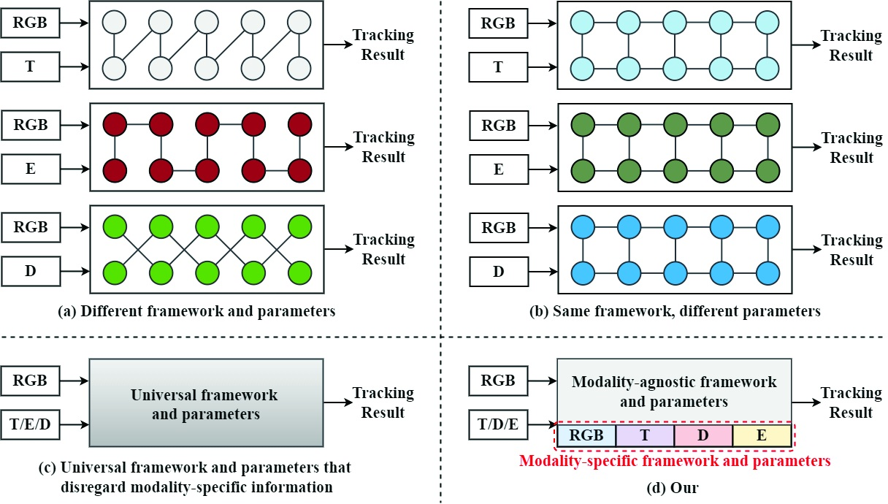
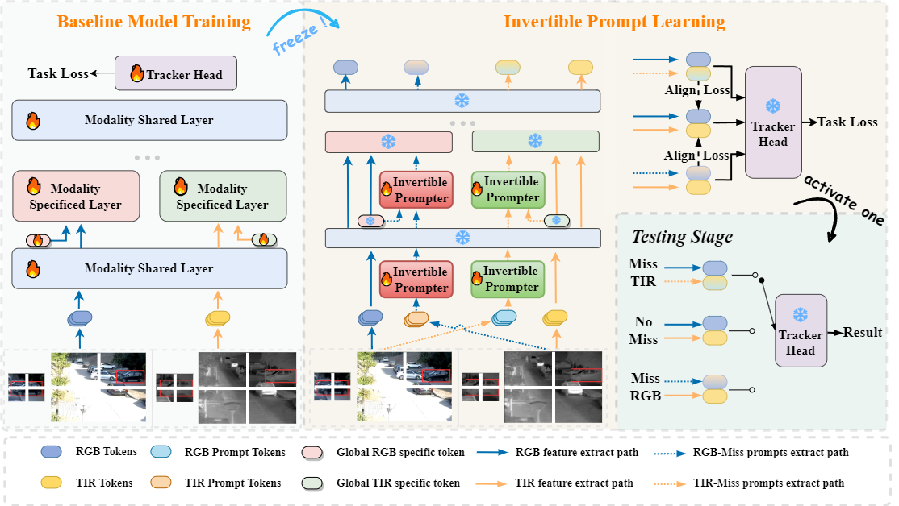
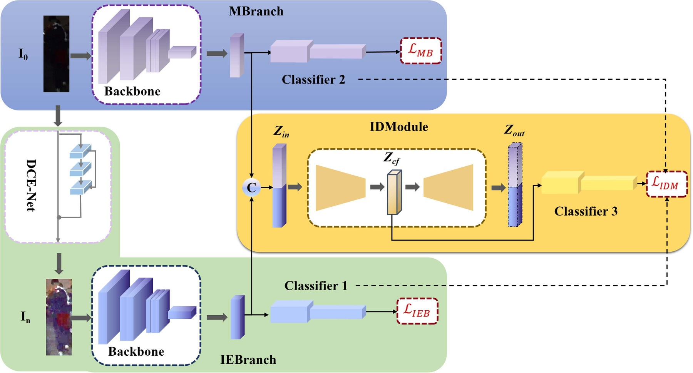
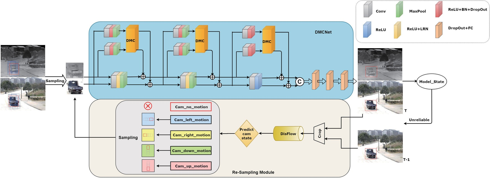
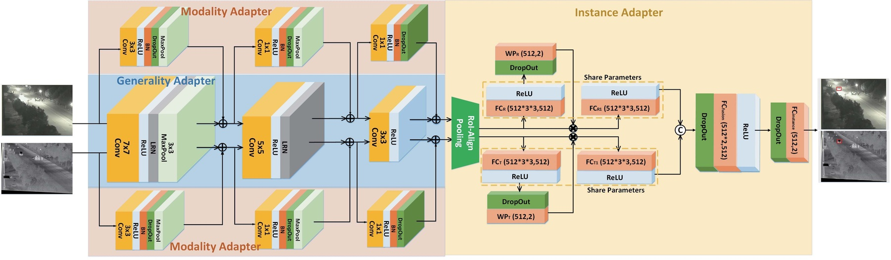

MULTIMODAL PERCEPTION · ANHUI UNIVERSITY
个人简介
多模态视觉跟踪 / 高效视觉模型 / 无人机具身智能
鹿安东，男，博士，安徽大学计算机科学与技术学院副教授。2023 年获得安徽大学计算机科学与技术工学博士学位，博士期间赴中国科学院自动化研究所智能感知计算中心王亮研究员课题组访学交流。2025 年博士后出站，并以绿色通道引进至安徽大学计算机科学与技术学院。
主要从事多模态视觉跟踪、高效视觉模型、无人机具身智能等方向的研究工作，已在 CVPR、IJCV、IEEE TIP、TIFS、TNNLS、IEEE TMM、ACM MM、AAAI 等国际期刊与会议发表20余篇学术论文。主持国家自然科学基金青年项目、博士后面上项目、企业横向项目等科研项目。
RGB-T TrackingEfficient VisionEmbodied Intelligence
LATEST WORK
近期动态01
聚焦真实场景中的模态缺失、跨模态差异与高效感知。
成果核对 · 2026.10.10Research Interests
研究方向02
多模态视觉跟踪
面向 RGB-T、多模态缺失、复杂光照和跨模态差异场景，研究动态融合、提示学习、知识蒸馏和多层交互机制。
高效模型
围绕动态路由、混合专家、Mamba、轻量化推理和多模态模型压缩，探索高效视觉感知模型的构建与部署。
无人机具身智能
面向无人机智能体的视觉感知、目标定位、实时跟踪与场景理解，开展具身感知与决策相关算法研究。
Selected Publications
研究成果03
近期论文与代表性工作，按年份排列。
没有匹配的成果，请尝试其他关键词或年份。

TIP · 2026
Pixel-Level RGBT Fusion Tracking via Heterogeneous Multi-Expert Distillation and Decoupled Representation Learning
IEEE Transactions on Image Processing, 35: 6775-6788, 2026 · DOI
该工作重新审视 RGBT 跟踪中的像素级融合，系统分析融合位置、模态差异与跟踪性能之间的关系，并提出 Task-driven Pixel-level Fusion tracker。方法通过轻量像素级融合适配器保持早期融合效率，结合异构多专家蒸馏与解耦表征学习增强任务判别能力，在多个 RGBT 跟踪基准上实现了兼顾精度与速度的表现。
CVPR · 2026
Spatio-Temporal Conditional Denoising Transformer for Modality-Missing RGBT Tracking
IEEE/CVF Conference on Computer Vision and Pattern Recognition, 13584–13593, 2026
该工作面向模态缺失 RGBT 跟踪，提出 Spatio-temporal Conditional Denoising Transformer，将当前帧空间线索与短期、长期历史时序上下文作为条件，引导可用模态特征逐步去噪。方法通过 noise-modulated adaptation 在同一框架内统一完成缺失模态重建与弱模态增强，提升动态缺失场景下跨模态表征的时间一致性和跟踪鲁棒性。
方法概览PMATrack
渐进式跨模态对齐
中心偏移 → 尺度变换 → 全局细化MUART244 · 非对齐 RGBT 跟踪方法概览Template Update
多模态模板更新
RGB · Thermal · Temporal Context面向目标外观变化的跟踪TIP · 2026
Unveiling the Power of Multi-Modal Template Update in RGBT Tracking
IEEE Transactions on Image Processing, 35: 6026–6040, 2026
围绕 RGBT 跟踪中的多模态模板更新开展研究，关注目标外观变化下的模板适应性。
TIP · 2025
AFter: Attention-based Fusion Router for RGBT Tracking
IEEE Transactions on Image Processing, 34: 4386-4401, 2025
该工作提出 attention-based fusion router，在不同层级自适应选择 RGB 与热红外信息的融合路径，缓解固定融合结构在复杂场景中的表达受限问题。模型通过路由机制增强跨模态互补性，使 RGBT 跟踪在遮挡、低照度和热干扰等场景下更稳健。
AAAI · 2025
RGBT Tracking via All-layer Multimodal Interactions with Progressive Fusion Mamba
AAAI Conference on Artificial Intelligence, 2025
该工作将多模态交互从单一融合层扩展到全网络层级，并利用 progressive fusion Mamba 建模长程依赖与跨模态动态关系。方法兼顾全局上下文和逐层互补信息，为高性能 RGBT 跟踪提供了更系统的交互范式。
TIFS · 2025
Nighttime Person Re-identification via Collaborative Enhancement Network with Multi-domain Learning
IEEE Transactions on Information Forensics and Security, 20: 1305-1319, 2025
该工作面向夜间行人重识别中的照明退化和域偏移问题，设计协同增强网络，将图像增强与 ReID 表征学习联合优化。多域学习机制提升了模型跨夜间场景泛化能力，为低照度安全感知提供了有效方案。

TCSVT · 2025
BR-MoE: Blind Multi-Modal Tracking with Route-Dynamic Mixture of Experts
IEEE Transactions on Circuits and Systems for Video Technology, 35(12), 2025
该工作关注盲多模态跟踪中输入模态状态未知的问题，引入 route-dynamic mixture of experts，让模型根据样本状态动态调度专家分支。该设计提升了模型面对模态干扰、缺失或质量波动时的适应能力。
方法概览QuadFusion
通用多模态视觉跟踪
RGB / Thermal / Event / LanguageQuadTrack600 · 600 个序列arXiv · 2025 · 预印本
Towards General Multimodal Visual Tracking
arXiv:2503.11218 · 预印本
提出四模态视觉跟踪任务，构建含 600 个序列的 QuadTrack600 基准；QuadFusion 使用多尺度融合 Mamba，联合建模 RGB、热红外、事件与语言信息。

IJCV · 2024
Modality-missing RGBT Tracking: Invertible Prompt Learning and High-quality Benchmarks
International Journal of Computer Vision, 2024
该工作面向真实场景中常见的模态缺失问题，提出可逆提示学习框架，在缺失模态条件下恢复有效跨模态提示，并构建高质量评测基准。其价值在于把 RGBT 跟踪从理想双模态输入推进到更贴近真实部署的鲁棒感知设置。
ACM MM · 2024
Breaking Modality Gap in RGBT Tracking: Coupled Knowledge Distillation
ACM International Conference on Multimedia, 9291-9300, 2024
该工作从知识蒸馏角度解决 RGB 与热红外之间的模态鸿沟，设计耦合蒸馏机制同时传递内容知识与模态互补知识。方法帮助跟踪器学习更一致、更判别的跨模态表征，提升复杂场景下的跟踪可靠性。

TMM · 2024
Illumination Distillation Framework for Nighttime Person Re-identification and a New Benchmark
IEEE Transactions on Multimedia, 26, 2024
该工作提出 illumination distillation framework，将光照相关知识迁移到夜间行人重识别表征中，并构建新的夜间 ReID 基准。该研究提升了低照度条件下身份表征的稳定性，为夜间视觉分析提供了数据和方法支撑。

TNNLS · 2022
Duality-Gated Mutual Condition Network for RGBT Tracking
IEEE Transactions on Neural Networks and Learning Systems, 2022
该工作针对 RGBT 跟踪中模态质量不稳定的问题，提出 mutual condition 与 duality-gated 机制，使两种模态能够相互约束、相互增强。方法强调低质量模态的可靠利用，而不是简单丢弃或固定加权。

TIP · 2021
RGBT Tracking via Multi-Adapter Network with Hierarchical Divergence Loss
IEEE Transactions on Image Processing, 30: 5613-5625, 2021
该工作提出多适配器网络与层级差异约束，在共享表征和模态专属表征之间建立更合理的协同关系。该方法为 RGBT 跟踪中的跨模态特征适配提供了早期且有影响力的解决思路。
Academic Services
学术服务04
学术兼职
- CSIG 合肥会员活动中心执行委员。
会议与竞赛组织
- Organizer, Object Tracking in the Real World Challenge, CVPR 2026 URVIS Workshop.
审稿服务
担任 IEEE TPAMI、IJCV、IEEE TIP、IEEE TMM、Information Fusion、CVPR、AAAI、ACM MM 等期刊与会议审稿人。
Contact
联系方式
欢迎围绕多模态视觉跟踪、高效模型、无人机具身智能及相关方向开展学术交流与合作。